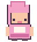
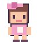
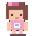

01 · Recém-nascida
Gugu, dada, primeiros cuidados e choro quando precisa de você.
UMA PEQUENA VIDA, GRANDES DESCOBERTAS
Ela começa dizendo “gugu”, aprende a dar os primeiros passos e, com seu carinho, descobre o mundo. Alimente, cuide, brinque e acompanhe cada conquista.
✳ SEU CANTINHO DE BRINCADEIRAS
Arraste um objeto até a bebê quando ela pedir. As necessidades mudam com o tempo, e cada cuidado ajuda sua amiga a crescer.
Descobrindo o mundo
Sua amiguinha está explorando o mundo. Espere ela precisar de algo e ajude!
As primeiras lembranças aparecerão aqui...
Na Web, a personagem vive dentro do jogo. No PC, ela pode passear pela área de trabalho. O progresso fica salvo somente neste navegador até você exportá-lo.
UMA VIDA CHEIA DE DESCOBERTAS
As fases dependem de tempo de jogo e cuidados: cada descoberta é conquistada, não acontece apenas por deixar a página aberta.
Gugu, dada, primeiros cuidados e choro quando precisa de você.

Começa a reconhecer palavras, brincar e pedir colo.

Aprende a andar, dizer frases curtas e fazer descobertas.

Conversa, cria desenhos, constrói memórias e se prepara para novas aventuras.